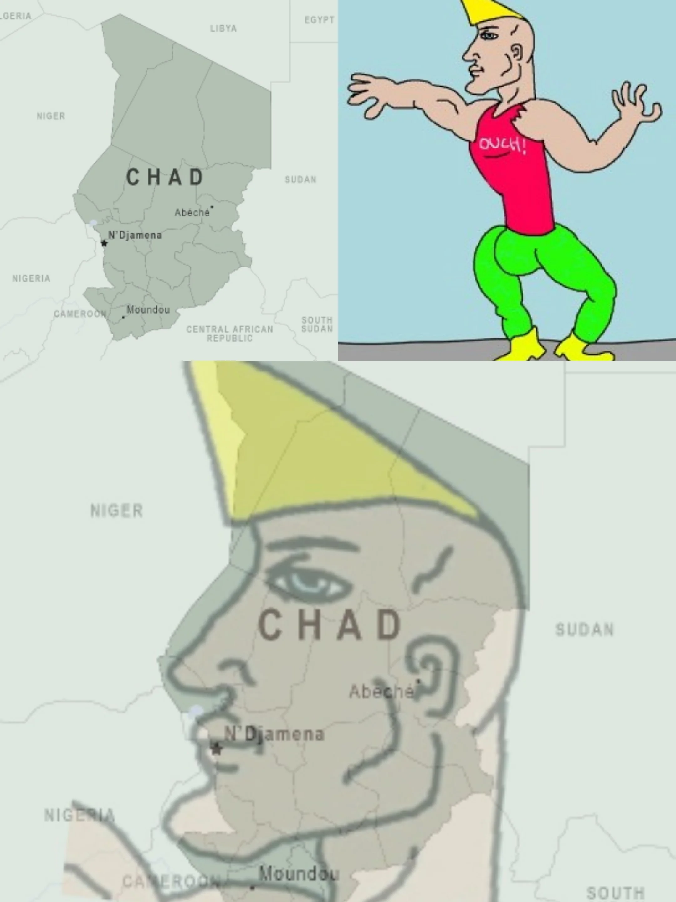

Once upon a time, in the heart of Africa, there was a land so legendary, so wildly underestimated, it made the internet say “Wait, Chad? That’s a thing?”
Welcome to Chad, the country that refuses to be ordinary.
The Legend of Lake Chad
Legend says Lake Chad was once so massive, it could fit all your problems—and then some—inside it. But over the years, it pulled a classic “now you see me, now you don’t” and shrank like your favorite hoodie after laundry day. Scientists say it’s climate change, but locals just say it’s playing hard to get.
Chad’s Capital: N’Djamena — The Name You’ll Pretend To Know
Try saying “N’Djamena” three times fast without spitting. Bonus points if you nail the accent. It’s the capital city that sounds like a new energy drink but is actually the beating heart of this magnificent desert kingdom.
Chad: Home of the Desert Fish (No, Seriously)
Yes, Chad has fish that survive in desert pools. These aquatic ninjas laugh in the face of dryness and will outlast your phone’s battery on 1%. Talk about resilience.
The Three Flags of Chad
Legend whispers of three Flags that unlock Chad’s true power:
- The Flag of Mystery (try finding Lake Chad while you're there, it often gets ignored)
- The Flag of Endurance (it is tough surviving the varying environments of the Sahara)
- The Flag of Surprise (Chad has secrets you can lookup that will blow your mind)
Chad vs. The Sahara
Chad stared down the Sahara Desert and said, “You shall not pass… without a sandcastle contest.” Spoiler: Chad won.
So next time you hear someone say “Where’s Chad?” you just smile, knowing this place is quietly rocking the desert like a boss, shrinking lakes, desert fish, and all.
Welcome to Chad — the original underdog that no one saw coming.
ssh chad@localhost -p 2222 : SaharanNotSahara